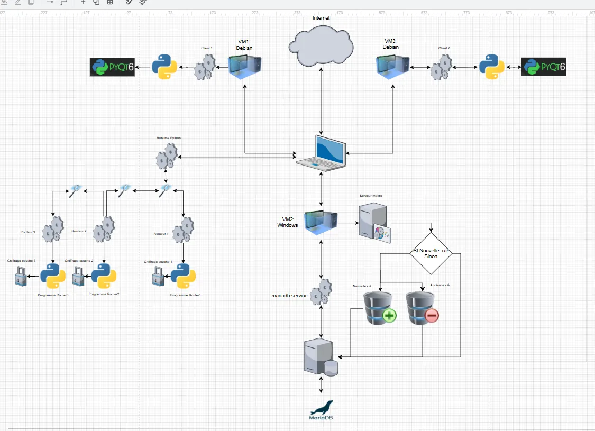
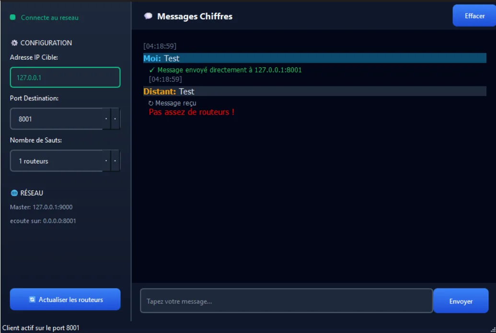
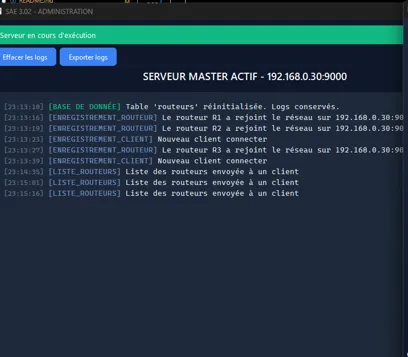

Routage en oignon avec RSA implémenté from scratch
Application répartie simulant un réseau d'anonymisation de type Tor, garantissant la confidentialité des échanges et l'anonymat de l'émetteur.
- Cadre
- BUT R&T
- Équipe
- Individuel
- Langage
- Python 3.10+
- Statut
- Terminé
01En résumé
Objectif
Concevoir un réseau de routage en oignon sans aucune bibliothèque de cryptographie tierce.
Ma contribution
Développement seul de l'ensemble : Master, routeurs, client, protocole applicatif, RSA, interfaces et base de données.
Résultat
Messages chiffrés en couches traversant plusieurs routeurs de façon anonyme, validé avec 3 routeurs et 2 clients.
02Le projet
Le système repose sur une architecture hybride centralisée / distribuée : un serveur Master joue le rôle d'autorité de certification et d'annuaire, tandis que les routeurs forment un maillage et relaient les messages sans jamais lire leur contenu final.
- Cryptographie : implémentation native de RSA (PKCS#1 v1.5), sans bibliothèque tierce.
- Communication : échanges TCP/IP asynchrones via sockets, avec gestion multithread.
- Interfaces : GUI PyQt6 pour le Master et le client (choix du nombre de sauts, envoi de messages).
- Persistance : MariaDB pour la topologie, les clés publiques et les journaux.
03Démarche
- Analyse du cahier des charges : fonctionnalités, contraintes (pas de bibliothèque crypto, PyQt imposé) et architecture.
- Architecture : plan de contrôle (Master) et plan de données (routeurs, clients).
- RSA : génération des clés, segmentation des messages, chiffrement et déchiffrement en couches.
- Protocole applicatif : trames textuelles (ENREGISTREMENT, LISTE_ROUTEURS, ACK…) et règles de routage.
- Interfaces et base de données : fenêtres PyQt6, tables routeurs et journaux, requêtes CRUD.
- Tests et documentation : environnement de 3 routeurs et 2 clients, guide d'installation et documentation technique.
04Technologies
- Python 3.10+
- POO, multithreading
- Sockets TCP/IP
- Communication asynchrone client / routeurs / Master
- RSA from scratch
- PKCS#1 v1.5, nombres premiers générés avec SymPy
- PyQt6
- Interfaces Master et client, signaux / slots
- MariaDB
- Persistance des routeurs, clés et journaux
- Protocole maison
- Format textuel délimité par | et ;
05Galerie



06Compétences BUT mobilisées (Apprentissage Critique)
AC23.02Développer une application à partir d'un cahier des charges
Master, routeurs et client avec interfaces graphiques, dans les délais imposés.
AC23.03Programmer une application client/serveur
Protocole applicatif et sockets TCP/IP multithread.
AC23.04Administrer un système de gestion de données
Installation de MariaDB et schéma relationnel.
AC23.05Accéder à des données depuis une application
Opérations CRUD pour distribuer la topologie aux clients.
07Bilan
Ce que j'en retiens
Toute la chaîne d'une application réseau distribuée, de la génération de nombres premiers pour RSA jusqu'à l'interface graphique. Travailler seul m'a obligé à intervenir sur toutes les couches : cryptographie asymétrique, programmation concurrente et base de données.
Avec du recul
La gestion du temps a été mon point faible : très investi dans la SAÉ pentest en parallèle, j'ai pris du retard sur la planification. Techniquement, un RSA en Python pur fonctionne mais reste moins performant qu'une implémentation native comme OpenSSL.